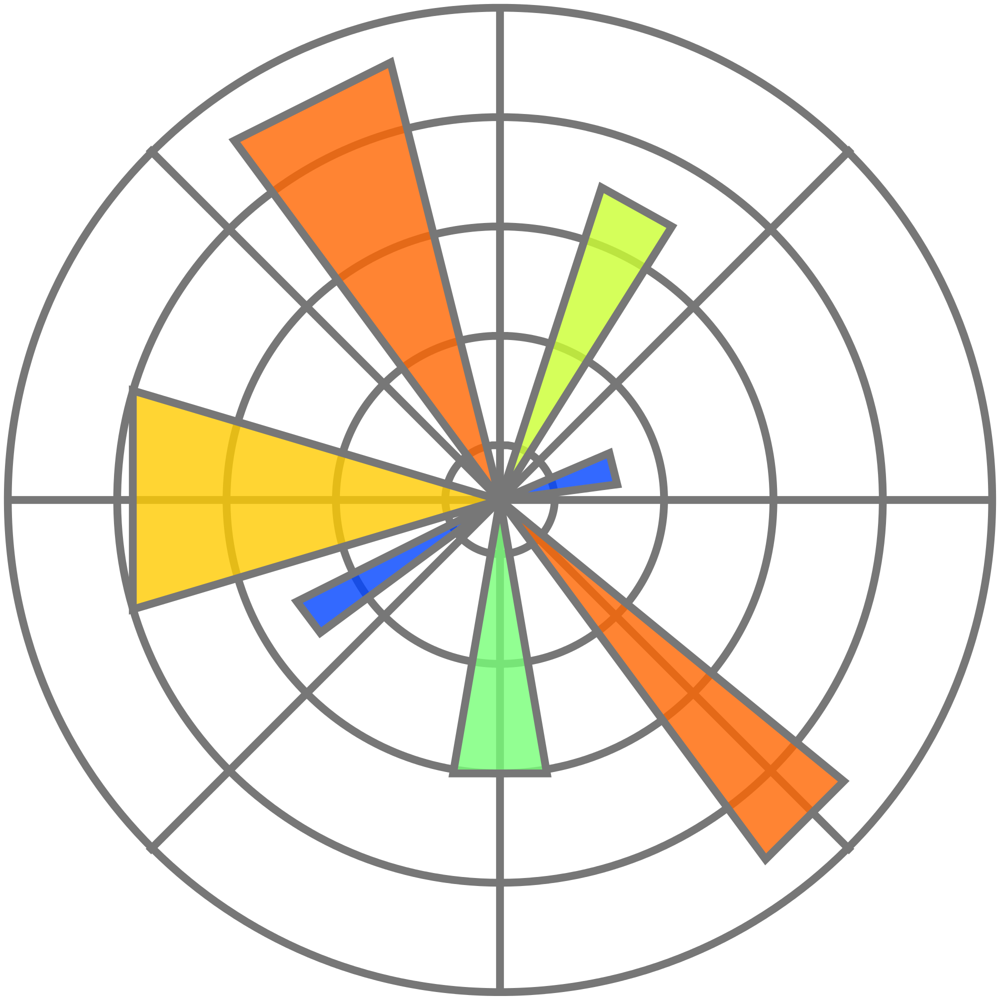
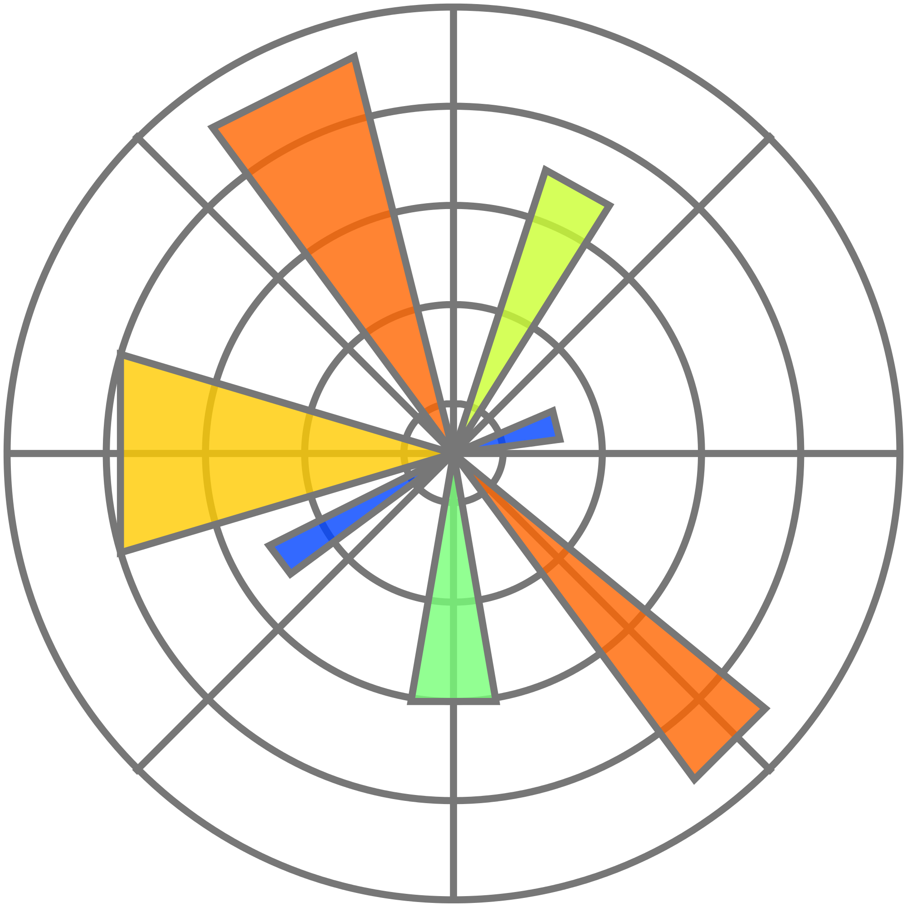

education/experience:

social media:


My name is Rusty, and I was born and raised in a coalmine town called Hurley, Virginia. My father was a coal miner, and so were many others in the area at the time. I felt that I shouldn't have to follow the footsteps of my ancestors, and instead wanted to invest my time into computer science. My hard work paid off, and I was admitted to Berea College from 2016-2020.
Berea College is a liberal arts school, and students are expected to invest much of their time into subjects outside of their major. On top of that, all students must work a part-time job on campus, which pays for everyone's tuition.
NO STUDENTS PAY FOR TUITION AT BEREA COLLEGE
Even though I studied computer science, I also put many hours into learning about art, history, languages, writing, religions, and cultures. As you can see in my header toolbar, there is an Artworks page. many of those works are directly from one of my art classes at Berea. However, I saw the frustration in myself and many other students during my time in college. "Why do I have to learn about art when all I want to do after college is code?!?!," many students would question. On top of that, the time spent in these other classes took time away from students' majors, which caused them to be academically behind students in their field of study from other colleges.
The answer is that my life shouldn't solely be about coding and work, and my time in college helped me branch out into other topics that had potential to stick with me for life. The things I learned from these classes are things that I probably wouldn't have learned any other way. In fact, some of the things I learned completely changed my future.
I took Japanese language classes during my first 2 years of college, and I fell in love with learning the language. I decided to study abroad in Japan during the summer of 2018, and became interested in pursuing a minor in Asian Studies (originally I had planned to pursue a minor in either music or mathematics). Afterwards, I studied Japanese history and religion, and Chinese language. With my knowledge of Asian studies continuously growing, I was requested by one of my professors to apply for the JET Programme. The JET Programme is a cultural exchange program for teaching English in Japanese public schools. It was a tough decision between continuing my life as a programmer, or move to Japan to experience a different life. I desperately wanted to experience life abroad and realized that the opportunity to move to Japan was rare, so I decided to go.
Now I currently live in Niigata Prefecture, Japan. A beautiful area filled with mountains and broad ricefields. When I am going on hikes, the mountains remind me of my Appalachian home in many ways. When I get out of the mountains, I'm introduced to ricefields, flatlands, and urban streets. I will not live in Niigata forever, but I'm not sure where I want to go after I am finished here. Preferably, I would like to continue my programming career somewhere else in Japan or pursue a career relating to Japanese relations or language.
I have many interests, but here are some of them:
- Learning Japanese
- Guitar
- Snowboarding
- Hiking
- Gaming
- Drawing
- Manga
- Traveling
- Coding
programming:
 
